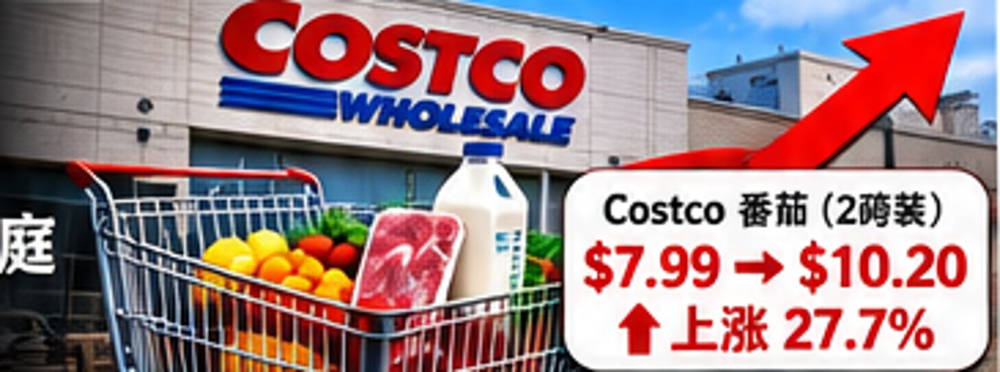

自由女神像，还能照亮多少美国梦？
——特朗普的六大政策之殇：战争、移民、关税、股市、盟友与家族利益
可可豆子的时事评论｜2026年11月4日
纽约港的自由女神像，已经矗立了140年。
她高举火炬，象征自由、希望与机会。
一百多年来，无数人跨越海洋来到美国。他们或许没有财富，没有权势，甚至不会说英语，但他们相信：只要努力工作、遵守法律、勇于创造，就有机会改变自己和下一代的命运。
美国的伟大，从来不只是因为拥有强大的军队、庞大的经济和领先的科技。
它更来自一种信念：自由、法治、机会，以及对个人尊严的尊重。
然而，今天的美国，正在经历一场令人不安的变化。
战争、能源危机、关税、移民执法、股市震荡、盟友关系紧张，以及总统家族的商业利益争议，正在共同考验这个国家。
特朗普反复宣称要让美国再次伟大。
但我们必须追问：
究竟是让美国伟大，还是让某些人更加富有？究竟是为了美国人民的未来，还是为了眼前的政治胜利？
我想用六句话，表达对特朗普施政方式的质疑。
一、以战求败。
战争不是一场为了个人面子而进行的政治表演。
特朗普曾经把自己塑造成能够结束战争、避免美国陷入长期海外冲突的领导人。
但伊朗战争所造成的经济冲击，迫使我们重新审视这种政治承诺。
伊朗不是一个能够简单通过军事打击解决的对手。
伊朗拥有约9000万人口、约165万平方公里国土，复杂的山地地形，以及多年建立的导弹、无人机和地区武装网络。
美国拥有压倒性的传统军事优势，但军事实力并不意味着能够迅速实现政治目标。
首先，伊朗拥有独特的地缘战略优势。
霍尔木兹海峡连接波斯湾与阿曼湾，是全球最重要的能源运输通道之一。
根据美国能源信息署的数据，2024年每天约有2000万桶石油及石油产品通过该海峡，相当于全球石油液体消费量的约五分之一。
伊朗即使不能长期完全封锁海峡，也可以通过航运威胁、保险成本和军事风险影响能源价格。
其次，伊朗的影响力并不局限于本国。
也门胡塞武装对红海航运构成的威胁、黎巴嫩真主党、伊拉克地区武装网络，以及波斯湾周边的能源设施，都使冲突存在扩大风险。
红海与苏伊士运河关系到亚欧贸易，海底通信电缆和关键港口设施也可能受到地区安全局势影响。
一旦这些节点受到冲击，全球运输、保险、能源和商品价格都可能上涨。
第三，战争成本最终会转嫁给普通家庭。
2026年10月9日，路透社报道，美国柴油平均价格达到每加仑6.28美元，较伊朗战争开始前上涨约70%。
柴油价格不仅影响卡车司机，还影响农业机械、食品运输、建筑设备和家庭取暖。
假设一个家庭每月消耗100加仑燃油，每加仑上涨1美元，一年就需要额外支出1200美元。
这还不包括食品、物流和其他生活成本的间接上涨。
一个国家可以赢得一场军事行动，却在经济上付出沉重代价；可以摧毁军事目标，却无法保证赢得长期和平。
特朗普政府当然可以认为军事行动有其国家安全理由，但它必须回答：战争目标是什么？如何结束？需要付出多少代价？外交手段是否已经充分使用？
如果战争是为了维护领导人的政治形象，而缺乏清晰、可实现的战略目标，那么人民有理由质疑这种决策。
二、ICE让人妻离子散。
美国需要安全的边境，也需要公正的法律。
对于暴力犯罪、毒品贩运、人口贩卖以及其他严重违法行为，政府依法执法是必要的。
支持边境安全，并不意味着缺乏同情心；关心移民家庭，也不意味着反对法律。
真正值得讨论的是：当执法的对象、方式和范围不断扩大时，国家如何在安全与人道之间保持平衡？
美国移民与海关执法局ICE承担着重要的执法职责。但执法必须接受法律监督，不能因为一个人的移民身份，就忽视其正当程序权利。
根据2026年皮尤研究中心的调查，35%的美国成年人对ICE持正面看法，56%持负面看法。
这种分歧说明，移民执法不仅是法律问题，也是社会信任问题。
美国成年人对ICE的整体评价
皮尤研究中心（Pew Research Center）｜2026年9月28日至10月4日｜5,062名美国成年人
更令人担忧的是执法对家庭的影响。
根据移民政策研究所对政府数据的分析，2026财年截至7月，约17,900次ICE拘留入所记录涉及自报拥有美国公民子女的父母。
他们不一定全部遭遇家庭分离，但每一次拘留都可能影响孩子的照护、家庭收入和日常生活。
美国当然可以要求移民遵守法律，但是否可以建立更加清晰的执法优先次序，把有限资源集中于真正危害公共安全的人？
对于长期生活在美国、有美国公民子女、没有暴力犯罪记录的人，是否应当更加充分地考虑司法程序、家庭情况和社区影响？
同时，美国也需要思考另一个长期问题。
为什么世界各地的科学家、工程师、企业家和普通劳动者愿意来到美国？
不仅因为这里拥有市场和财富，更因为他们相信美国的法治、自由和机会。
如果美国逐渐让世界形成一种印象：只有财富和权势才能带来安全感，那么这个国家对全球人才的吸引力也可能受到影响。
自由女神像手中的火炬，不应该只照亮富人的游艇，而照不到普通家庭的窗户。
边境安全和人的尊严并不是一道非此即彼的选择题。
一个真正成熟的国家，应该有能力同时做到两件事：坚定执行法律，同时确保执法受到监督、程序得到保障、儿童受到保护。
法律的威严来自公正，而不仅仅来自强硬。
美国需要有力量的边境，也需要有温度的制度。
自由女神像象征的美国梦，不应该因为移民政策的变化而失去它最珍贵的人道精神。
三、高关税让老百姓民不聊生。

一项贸易政策究竟好不好，不应该只看政府增加了多少税收，更应该看普通家庭最后付出了多少代价。
特朗普把高关税作为贸易谈判的重要武器，强调保护美国制造业、减少贸易逆差，并希望通过关税增加政府收入。
但一个非常现实的问题是：关税到底是谁在支付？
很多人以为，美国对外国商品征收关税，就是让外国政府替美国人民交钱。
实际上，美国海关首先向进口商征税。进口商可能要求外国供应商降价，也可能自己承担一部分成本，但最终还有一部分会通过批发、运输和零售环节，转嫁到美国消费者身上。
我们不妨走进美国普通家庭经常购物的Costco，看看真实的价格变化。
第一、Costco里的商品，究竟涨了多少钱？
2026年1月15日，财经网站GOBankingRates刊登了一篇Costco商品价格追踪报道，比较了2025年4月、6月和12月的部分商品价格。
其中一款两磅装混合番茄，价格出现了这样的变化：
2025年4月：7.99美元。
2025年6月：7.99美元。
2025年12月：10.20美元。
短短八个月，价格上涨了2.21美元，涨幅约27.7%。
同一报道还记录了Costco的Kirkland有机柠檬水：2025年4月为6.29美元，12月上涨至7.25美元，涨幅约15.3%。
这些价格变化是真实报道的零售价格比较，但不能把全部涨幅都归因于关税，因为季节、运输、能源、原料成本和商品规格也可能发生变化。
然而，它们至少让我们看到：当生活必需品价格上升时，普通家庭感受到的不是宏观经济模型，而是每次结账时越来越长的账单。
第二、为什么富人不在乎的几百美元，却可能压垮普通家庭？
假设两个美国家庭。一个家庭年收入5万美元，另一个家庭年收入100万美元。
如果两家一年都因为商品涨价额外支出1500美元：对于年收入5万美元的家庭，这相当于全年税前收入的3%；对于年收入100万美元的家庭，只相当于0.15%。
虽然富裕家庭实际购买的商品可能更多、承担的关税金额也可能更高，但他们通常拥有更大的财务缓冲。
对于低收入家庭而言，1500美元可能意味着数个月的电费、一笔汽车维修费、孩子的课外活动，或者原本准备留作紧急医疗开支的储蓄。
同样是1500美元，对有些家庭只是账单上的数字，对另一些家庭却可能意味着必须放弃某些生活需要。
这正是经济学所说的“累退性负担”：某些税收或价格上涨，对低收入家庭造成的收入比例损失更大。
第三、耶鲁大学的研究揭示了什么？
耶鲁大学预算实验室在2025年4月2日发布的关税政策模拟研究中估计，当时宣布及实施的相关关税措施可能导致：
美国普通家庭平均每年损失约3800美元的购买力。
收入处于较低水平的家庭，平均每年损失约1700美元。
收入分布中间层家庭，平均每年损失约3000美元。
更值得注意的是，这项研究估计，收入处于第二个十分位的家庭，关税造成的负担相当于可支配收入的约4.0%；而收入最高十分位家庭约为1.6%。
也就是说，按照收入比例计算，较低收入家庭承受的压力可能达到高收入家庭的2.5倍。
需要说明，这些数字是2025年4月政策条件下的模型预测，并不是2026年所有家庭实际支付的关税账单。后续政策、司法裁决及企业定价变化，都可能改变最终结果。
但研究所揭示的分配问题，值得认真讨论。
第四、为什么关税会影响美国自己生产的商品？
有人可能会问：既然进口商品涨价，为什么不买美国制造的商品？
问题在于，美国制造业本身也需要大量进口零部件和原材料。
一家美国汽车制造商，可能需要进口钢材、电子芯片、线束或其他零部件。
一家美国建筑公司，可能需要进口设备、五金或建筑材料。
一家美国食品企业，可能依赖进口包装材料、机械和运输设备。
当这些投入成本上升时，即使最终产品是在美国生产的，售价也可能上涨。
纽约联邦储备银行2026年9月修订的一项研究估计，2025年关税上涨部分约有26%传导到消费品价格，其中既包括进口商品的直接涨价，也包括美国本土产品通过供应链和竞争变化产生的间接涨价。
而且，间接影响可能需要9至12个月才逐渐显现。
这意味着，今天看到的零售价格，不一定立即反映所有关税成本；某些影响可能延迟出现。
第五、Costco自己为什么也要为关税打官司？
2026年，Costco就此前征收的部分关税寻求退款。
公司管理层表示，过去一年为了降低会员负担，Costco在不少情况下没有把全部关税成本转嫁给消费者。
如果未来获得退款，公司计划通过降价和提供更高商品价值等方式让会员受益。
这说明关税的成本并不是一个简单的数学公式：企业可以压缩利润、调整供应链，也可能提高售价。
但企业即使暂时承担部分成本，也不能保证长期完全吸收。
更值得思考的是，如果关税最终被退还给进口商，那些已经支付较高零售价格的消费者，能否得到相应补偿？
2026年3月，路透社报道，Costco消费者已经围绕潜在关税退款提起诉讼。
从政府征税，到企业承担成本，再到消费者购买商品，最后又出现退款争议——一项关税政策的经济影响，远比政治口号复杂。
第六、真正应该衡量的，是普通家庭的生活水平。
关税支持者认为，它能够保护部分美国企业和就业岗位，增加谈判筹码，并减少对外国供应链的依赖。
这些目标有其政策依据，也值得认真评估。
但即使一个政策具有保护产业的目的，也必须回答三个问题：
它保护了多少就业？
它让消费者额外支付了多少钱？
它对低收入和中产阶级家庭造成的压力，是否超过了带来的收益？
对于富裕家庭而言，物价上涨可能意味着少购买几件奢侈品，或者减少一点储蓄。
对于普通家庭而言，却可能意味着推迟修车、减少购买新衣、取消一次家庭旅行，甚至不得不重新安排食品和医疗预算。
这不是抽象的经济学争论。这是数千万家庭每天面对的现实选择。
一个国家的经济是否强大，不能只看政府收到了多少关税，也不能只看股市上涨了多少。更应该看一个普通劳动者，在支付住房、食品、能源、医疗和教育费用之后，还能剩下多少钱。
如果一项政策让财政收入增加，却持续侵蚀普通家庭的购买力，那么政府就必须清楚解释，这些代价究竟换来了什么。
真正值得追求的繁荣，不只是国家账面上的收入增加，而是普通人的生活水平能够实实在在地提高。
2025年4月：$7.99 ｜ 6月：$7.99 ｜ 12月：$10.20
来源：GOBankingRates，2026年1月15日。价格变化不能全部归因于关税。四、谎报军情，让大家弹尽粮绝。
这里的“军情”，我指的是特朗普不断释放的经济、贸易、战争与和平信号。
这里的“弹尽粮绝”，指的是普通股票投资者在反复震荡中遭受的财富损失。
金融市场最怕什么？
不是坏消息，而是不可信、不可预测、不断反复的消息。
2025年4月，特朗普宣布大规模对等关税后，美国股市剧烈下跌。
根据路透社当时的报道，标普500指数成分股在随后两个交易日内合计损失约5万亿美元市值。
随后，特朗普宣布对部分关税实施90天暂缓，标普500指数在2025年4月9日单日上涨约9.5%。
短短几天，市场在恐慌与狂欢之间剧烈摆动。
但必须说明，5万亿美元是市场估值减少，并不意味着投资者实际卖出了5万亿美元的股票，也不等于全部形成已实现亏损。
对于能够长期持有、拥有充分流动性的机构投资者而言，波动可能创造交易机会。
但对于使用保证金、杠杆产品、短期期权，或者因生活需要必须出售股票的普通投资者而言，市场反复可能造成真实损失。
尤其是当政府释放战争即将结束、谈判取得突破、关税即将调整等消息时，投资者会根据这些信息重新定价。
如果和平预期随后落空，股价又可能反转。
那么问题来了：
总统的公开表态，究竟是为了向公众提供准确的信息，还是为了影响市场预期？
我认为，当政策信息一次又一次引发剧烈市场波动时，公众有理由要求更高的透明度。
市场波动本身不能证明总统故意操纵股市。要证明操纵，还需要交易记录、知情人关系、资金流向以及主观意图等证据。
但正因为总统的话语拥有巨大的市场影响力，才更应该受到严格监督。
美国证券市场建立在信息披露、公平交易和公众信任的基础上。
一个总统不能把金融市场当成政治表演的舞台，更不能让普通投资者的积蓄成为政策反复的牺牲品。
五、背信弃义，让盟友孤军奋战。
一个国家的信用究竟值多少钱？
对于乌克兰而言，这个问题关系到国家的生存；对于欧洲而言，关系到整个大陆的安全；对于加拿大而言，则关系到一个长期盟友是否仍然值得信赖。
第一，乌克兰放弃核武器，换来的安全承诺究竟在哪里？
1994年12月5日，乌克兰与美国、英国、俄罗斯签署《布达佩斯备忘录》。
苏联解体后，乌克兰境内曾部署着世界第三大核武器库。乌克兰最终放弃这些核武器，成为无核武器国家。
作为交换，美国、英国和俄罗斯作出了尊重乌克兰独立、主权及既有边界等安全保证。
必须指出，这些保证并不等同于北约第五条规定的自动集体防御义务。
然而，安全保证依然具有重大的国际政治意义。
2014年，俄罗斯吞并克里米亚；2022年，俄罗斯全面入侵乌克兰。
作为《布达佩斯备忘录》的签署国，俄罗斯的行为严重违反了其对乌克兰作出的承诺。
那么，其他签署国又应该如何维护这一国际安全安排的信誉？
如果一个国家在放弃核武器之后，依然无法获得可靠的安全保障，世界上其他拥有核武器的国家，又为什么愿意相信国际社会的弃核承诺？
这不仅是乌克兰的问题，更是全球核不扩散体系的问题。
第二，一边要求欧洲承担俄罗斯威胁，一边与俄罗斯恢复能源交易，究竟传递了什么信号？
2026年10月，特朗普政府与俄罗斯达成柴油供应安排。
根据路透社10月9日的报道，特朗普表示俄罗斯将立即向美国及全球市场供应超过30万吨柴油，并计划在11月进一步增加供应。
当时美国柴油平均价格已达到每加仑6.28美元。
降低美国消费者能源成本，当然是政府可以追求的政策目标。
但问题在于，俄罗斯能源收入与其战争经济之间存在密切联系。
欧洲国家长期面临削减俄罗斯能源依赖、增加国防支出和援助乌克兰的压力。
当美国重新允许部分俄罗斯柴油进口时，欧洲盟友自然会追问：美国与欧洲究竟是否仍然遵循一致的战略原则？
如果欧洲需要为对抗俄罗斯承担更高能源成本，而美国却为了短期价格利益恢复部分俄罗斯能源交易，那么跨大西洋联盟如何维持政策协调？
第三，欧洲为什么越来越担心自己的安全？
俄乌战争已经改变了欧洲的安全环境。
英国、法国、德国、波兰以及北欧国家，都在不同程度上加强军事准备。
核威慑、海上安全、防空系统、弹药储备和关键基础设施保护，重新成为欧洲的重要议题。
欧洲增加防务能力本身并不意味着战争不可避免。
但这种变化反映了一个现实：欧洲正在认真考虑，如果美国未来的安全政策发生变化，欧洲应当如何保护自己。
一个曾经依赖美国安全承诺的大陆，开始不得不重新计算独立防御的成本。
这正是联盟信任受到冲击时可能产生的长期后果。
第四，加拿大做错了什么？
加拿大与美国拥有世界上最紧密的双边经济关系之一。
两国之间不仅有漫长的共同边界，更有高度一体化的汽车、能源、农业和制造业供应链。
加拿大还是美国在北约和北美防空司令部体系中的重要合作伙伴。
然而，特朗普不仅对加拿大采取关税措施，还多次提出加拿大成为美国“第51个州”的说法。
2025年5月6日，在与加拿大总理马克·卡尼的会面中，特朗普再次表达了这一想法。
卡尼明确回应，加拿大人的立场不会改变。
关税争议可以谈判，贸易分歧可以协商。
但一个主权国家，不应该因为与美国经济联系紧密，就被视为可以重新划定边界的对象。
加拿大长期向美国提供能源、商品、投资和安全合作。
美国同样从这一关系中获得巨大收益。
如果对这样一个长期伙伴，也主要使用关税威胁和涉及其主权的言论，那么其他盟友会如何看待美国的承诺？
第五，失去盟友信任，美国最终失去的是什么？
美国最重要的国际资产之一，不仅是军事力量，更是长期建立的信任网络。
盟友提供军事基地、情报、市场、技术合作和外交支持。
这种合作不是美国单方面的施舍，而是双方共同受益的安排。
特朗普政府可以主张盟友承担更多责任，也可以重新谈判贸易条件。
但短期交易利益与长期战略信用之间，必须保持平衡。
如果美国不断改变政策，却要求盟友始终保持忠诚，这种关系最终可能难以维持。
乌克兰放弃核武器时相信国际承诺；欧洲建立安全体系时相信跨大西洋合作；加拿大发展经济时相信长期伙伴关系。
当这些信任受到冲击，受损的绝不仅仅是某一份协议，而是整个国际秩序的可预测性。
一个国家可以通过强硬获得短期让步，却不能仅靠强硬赢得长期信任。
而失去信任之后，再想重新建立，代价可能远远超过一笔能源交易或一轮关税谈判带来的收益。
六、急功近利，疯狂敛财。
这一条，我特别想讨论总统家族利益、政治权力与商业财富之间的关系。
特朗普家族涉及房地产、品牌授权、数字资产及其他商业活动。
特朗普第二任期内，与其家族相关的加密货币业务引发了广泛的利益冲突讨论。
例如，特朗普家族关联的World Liberty Financial项目，以及特朗普个人品牌相关的数字代币，都引发了外界对总统职权、监管政策和私人商业收益之间关系的关注。
这类问题的关键，不只是相关资产涨了多少钱，而是谁能够从政策变化中获益。
当总统有能力影响金融监管、加密货币政策、国际谈判和政府合同，而其家族又参与相关商业活动时，公众有理由要求更加充分的利益披露。
这里还必须谈到马斯克和SpaceX。
SpaceX长期承担美国政府航天发射、载人航天和国家安全相关任务，其与NASA、美国国防部门等机构之间的合同关系，本身有公开记录。
政府采购可以完全合法，也可能具有重大国家战略价值。
但当大型政府承包商的实际控制人同时具有显著政治影响力时，公众就更有理由关注政府合同、监管决定和政治活动之间是否存在利益冲突。
至于SpaceX融资、潜在上市消息与特朗普战争或和平表态之间的时间关系，我认为值得把每一次事件放在时间线上核查。
一次巧合可能只是巧合。
两次巧合，也可能只是巧合。
如果出现多次值得关注的时间重合，就应该进一步核实交易记录、政策决定和受益情况。
但时间重合不等于已经证明内幕交易，更不能仅凭股价上涨或估值变化认定有人套现。
真正需要追问的是：
谁掌握了信息？
谁在消息公布前后交易？
谁获得了实际现金收益？
谁承担了市场波动的损失？
是否存在应当回避而没有回避的利益冲突？
当政治权力与私人财富之间的界限越来越模糊，最需要保护的，就是普通公众对制度公平的信任。
总统可以富有，企业家可以参与政治，但国家权力不应该成为任何家族积累私人财富的特殊通道。
结语：自由女神像的火炬，究竟为谁而亮？
战争可以用强硬语言包装。
关税可以用爱国口号包装。
移民执法可以用国家安全包装。
股市震荡可以用市场自由解释。
盟友裂痕可以被描述为重新谈判。
家族商业利益也可以被解释为正常经营。
但把这些问题放在一起，我们就必须问：
美国究竟正在变得更加强大，还是变得更加昂贵、更加分裂、更加难以预测？
我不反对强大的美国。
我反对把强大误解为可以不计代价地使用力量。
我不反对边境安全。
我反对让执法失去必要的人道与法律约束。
我不反对商业成功。
我反对让公共权力与私人财富之间失去清晰界限。
我更不反对总统表达信心。
但我反对让金融市场在不断反复的政治信号中承受本可避免的混乱。
自由女神像已经站在那里140年。
她不属于某一个总统，不属于某一个政党，也不只属于富有的人。
她象征着一种更为珍贵的承诺：
无论来自哪里，只要尊重法律、努力奋斗，每个人都应该有机会追求自己的梦想。
如果有一天，自由女神像的火炬只能照亮权贵，却照不到普通家庭；如果美国的繁荣只能让少数人受益，却让更多人承担战争、通胀与市场震荡的代价，那么我们必须重新追问：
特朗普口中的“让美国再次伟大”，究竟是让谁伟大？
——可可豆子的时事评论